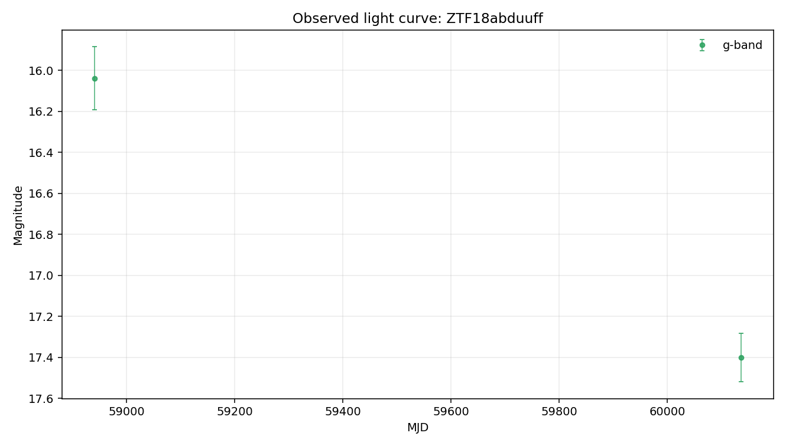

Static evidence report generated from the local case-file JSON.
Evidence Narrative
Evidence is limited by available comparator context
Some evidence layers are missing, failed, or limited by the available local detections. The case file supports cautious review rather than a firm conclusion.
Evidence Sections
Baseline transient-shape checkinsufficient_data
The Gaussian bump check could not be evaluated because too few usable detections were available.
Variability textureinsufficient_data
The variability texture check could not be evaluated because too few usable detections were available.
Standard feature summaryinsufficient_data
Standard descriptive features could not be computed because too few usable detections were available.
Template-family probelimited
Template-family probing was limited because the usable detections were insufficient.
Cross-survey contextnot_requested
External catalog context was not requested for this case-file run.
What Argus Can Say
The current evidence supports cautious further review.
No spectroscopic information is recorded in this case file.
What Argus Cannot Say
Argus does not identify the object type.
Argus does not certify that the source is unusual.
Argus does not treat broker or catalog labels as ground truth.
Argus does not treat template-family probes as object identity.
Recommended Next Checks
Add verified redshift or context before interpreting template-family probes.
Run cross-survey context if network access and optional dependencies are available.
Inspect forced photometry around recent detections if available.
Caveat: This narrative summarizes evidence layers. It is not a physical classification.
Visual Summary

Observed light curve
Object Summary
Object ID
ZTF18abduuff
Source date
2026-05-20
Coordinates
RA=258.226, Dec=-20.732
Detections
2
Non-detections
153
Filters observed
g, r
First MJD
58634.2
Last MJD
61180.3
Time span days
2546.08
Schema version
1.9
Classification Metadata
No broker or catalog classification metadata is attached.
Any external labels shown here are metadata only, not Argus conclusions.
Light-Curve Summary
Detections
2
Non-detections
153
Filters observed
g, r
First MJD
58634.2
Last MJD
61180.3
Time span days
2546.08
Most recent detection MJD
60136.3
Longest detection gap days
1195.87
Per-Filter Summary
Filter
Detections
Non-detections
Mag min
Mag max
Delta mag
g
2
57
16.0388
17.4006
1.36179
r
0
67
Not available.
Not available.
Not available.
Feature Summary
Source
light-curve
Band
r
Status
insufficient_data
Usable points
0
Feature Values
None recorded.
Interpretation
Standardized light-curve features were not computed for r-band: only 0 usable detection(s) were available, below the minimum of 5.
Caveat
Feature values are descriptive summaries only and do not identify the object type.
Comparison Summary
Comparison evidence is limited
The Gaussian bump comparator had insufficient r-band data (0 detection(s)), so it could not test a single smooth bump. The variability texture comparator had insufficient r-band data (0 detection(s)), so repeated or irregular texture could not be assessed. Together, these leave the light-curve shape underconstrained by the available comparator evidence.
Caveat
This is not a physical classification. It does not identify the object type, physical cause, or special status.
Recommended next check
Load or collect more r-band detections before interpreting comparator results.
Model Comparisons
Gaussian bump (r-band)
Model type
gaussian_bump
Filter used
r
Status
insufficient_data
Parameters
None recorded.
Fit Metrics
n_points
0
Residual Summary
Only 0 detection(s) in r-band — below the minimum of 5 required to fit a 4-parameter Gaussian bump.
Interpretation
No comparator was fit in r-band: not enough detections survive the quality cut.
Variability texture (r-band)
Model type
variability_texture
Filter used
r
Status
insufficient_data
Parameters
None recorded.
Fit Metrics
minimum_points
5
n_points
0
Residual Summary
Only 0 detection(s) in r-band - below the minimum of 5 required for the variability texture summary.
Interpretation
The r-band variability check was not computed: only 0 detection(s) were available, below the minimum of 5. This does not support a conclusion about the light-curve shape.
sncosmo template probe
Model type
sncosmo_template_probe
Filter used
g
Status
insufficient_data
Parameters
None recorded.
Fit Metrics
bands_used
["g"]
magnitude_system
ab
model_family
sncosmo_template_family
n_points
2
template_name
hsiao
zeropoint
25
Residual Summary
Only 2 usable detection(s) after filtering invalid magnitude/error values.
Interpretation
sncosmo template fitting was not attempted because the available detections are not sufficient for a reliable template-family comparison.
Cross-Survey Context
Status
not_requested
Coordinates
Not available.
Search radius arcsec
Not available.
Sources
No catalog sources recorded.
Interpretation
Cross-survey catalog context was not requested for this run.
Caveat
No external catalog query was performed.
Uncertainty and Recommended Next Checks
Evidence Notes
Object has 2 rb-filtered detection(s) and 153 non-detection(s) on file.
Filters observed: g, r.
Coverage spans MJD 58634.25 to 61180.33 (2546 days).
Most recent detection: MJD 60136.34.
Longest gap between consecutive detections: 1196 days.
In r-band: 0 detections and 67 non-detection(s). Source was below detection threshold whenever ZTF looked in r.
No external classification label is attached to this object in local data.
Uncertainty Notes
No SIMBAD/NED/Gaia cross-match has been performed in Phase 2B.
No spectroscopic information is on file.
No forced-photometry follow-up has been requested.
Candidate explanations above are placeholders, not fits, so mismatch magnitudes and goodness-of-fit values are not yet available.
No external classification label is present in local data.
Recommended Next Checks
Cross-match position (RA=258.22591, Dec=-20.73201) against SIMBAD and NED for any known counterpart.
Search PanSTARRS at this position for a candidate host galaxy and record offset from any nearby extended source.
Pull ZTF forced photometry in a ±90-day window around the most recent detection (MJD 60136.34).
Replace the Phase 2C Gaussian-bump baseline with physical templates (Type Ia SN light curve, AGN damped random walk, stellar-flare profile) and add their residuals to model_comparisons.